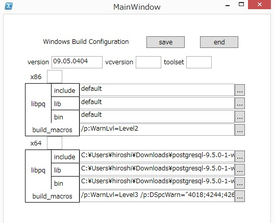

This page describes how to build the PostgreSQL ODBC Driver on Windows. There are three methods to build: from command line using nmake makefiles, from Powershell using MSBuild files, and from Visual Studio IDE.
The following 3rd party software are required for the build:
Using Powershell and MSBuild is recommended.
In fact the binaries of official release are built using this mothod.
Currently 4 Windows Powershell scripts are provided for developers.
winbuild/BuildAll.ps1 - build all dlls for psqlodbc drivers using
MSBuild.
winbuild/editConfiguration.ps1 - a GUI tool to set Build environment
winbuild/regress.ps1 - build regression test programs and run
installer/buildInstallers.ps1 - build installers(.msi and setup.exe)
Use Powershell console or Command Prompt to invoke scripts:
For example, to build the driver:
C:\psqlodbc\winbuild\> (Powershell) ./BuildAll.ps1 <options>
or you can use the same functionality from Command Prompt using Windows
helper batch at the parent folder (..\). See ..\readme_winbuild.txt.
C:\psqlodbc\> (Commnd Prompt) .\BuildAll.bat <options>
1. Please start a powershell console and set the ExecutionPolicy of
Powershell to RemoteSigned or Unrestricted.
You can get the ExecutionPolicy by typing
Get-ExecutionPolicy
When the ExectionPolicy is "Restricted" or "AllSigned" then type e.g.
Set-ExecutionPolicy RemoteSigned
To see details about ExecutionPolicy, type
Get-Help about_Execution_Policies
2. You have to install one of the following.
. Visual Studio 2015 non-Express edtion or Express 2015 for Windows
Desktop
. Visual Studio 2013 non-Express edtion or Express 2013 for Windows
Desktop
. Visual Studio 2012 non-Express edtion or Express 2012 for Windows
Desktop
. Full Microsoft Visual C++ 2010
. Windows SDK 7.1
You have to include x64 development tools (bin, lib, include) as
well as x86 ones for the installation.
You can install multiple versions of VC++ and use them.
You can easily switch by specifying VCVersion parameter.
3. Setup Build environment
Please type
.\editConfiguration(.ps1)
and edit the setting of your environment especially the folders
you placed libpq related include/lib/bin files.

4. Build
Please type
.\BuildAll(.ps1)
to invoke build operations.
If you installed both VC10 and VC12 and you'd like to compile
under VC10 environment, type
.\BuildAll(.ps1) -V(CVersion) 10.0
or set the value 10.0 to vcversion using ./editConfiguration.
To see details about the use of BuildAll, type
Get-Help .\BuildAll(.ps1) [-Detailed | -Examples | -Full]
5. Outputs of Build
The build can produce output in up to four directories for each of
the debug and release configurations:
- x64_Unicode_Release the Unicode driver, 64-bit
- x86_ANSI_Release the ANSI driver, 64-bit
- x86_Unicode_Release the ANSI driver, 32-bit
- x86_ANSI_Release the Unicode driver, 32-bit
For debug builds (-Configuration Debug) the directories are named with
Debug instead of Release but otherwise the same.
pgxalib.dll is only built for the multibyte/unicode version, as it is
the same for both unicode and ansi drivers.
6. How to use drivers.
You can't use psqlodbc drivers at once you build the drivers.
Usually you have to install drivers using installers made by
installer/buildInstallers.ps1. buildInstallers.ps1 bundles
libpq and related libraries like ssleay32, libeay32 from the
PostgreSQL bin directory and MSVC runtime libraries compiled with.
However, it is painful for developers to build binaries, build
installers and install each time the source files are changed.
It is recommended to use a special installation-less driver
(postgres_devw) registered by regress.ps1
7. Regression test in place
After BuildAll(.ps1), please type
.\regress(.ps1)
You have to neither install nor copy binaries.
By default, build 32-bit binaries from test sources and run the tests.
If you'd like to test 64-bit version, please type
.\regress(.ps1) -p(latform) x64
Please note the outputs(obj, exe etc) generated by build operations and
results of tests are placed in the directory winbuild/test_x86(test_x64
in case of 64-bit).
8. Installer
To build the .msi installer file:
C:\psqlodbc\installer\> (Powershell) ./buildInstallers.ps1 <options>
or
C:\psqlodbc\> (Command Prompt) .\buildInstallers.bat <options>
By default, buildInstallers.ps1 builds bootstrapper program
psqlodbc-setup.exe together.
See ../installer/readme.txt in the source directory for details.
Troubleshooting:
Some documentation on dealing with Windows SDK installation issues
can be found on the related pg_build_win page:
https://github.com/2ndQuadrant/pg_build_win#troubleshooting
C:\psqlodbc\> nmake /f win64.mak <options>Despite the name, win64.mak is used to build both 32-bit and 64-bit binaries. With the Microsoft Windows SDK Command Prompt, you can switch between 32-bit and 64-bit target architectures with setenv /x86 and setenv /x64 commands. If using a Visual Studio Command Prompt you can start the x86 or x64 versions from the Start menu, or run vcvarsall.bat with appropriate options to switch architectures.
To build the .msi installer file:
C:\psqlodbc\> nmake /f win64.mak installer
The resulting installer file goes to installer/x64 or installer/x86 directory.
To build both 32-bit and 64-bit versions in one command:
C:\psqlodbc\> nmake /f win64.mak world
The following build options may be used, either on the command line, or by creating a file called "windows-local.mak".
| Variable | Values |
| CFG | Release(default), or Debug |
| PG_INC | $(PROGRAMFILES)\PostgreSQL\9.3\include |
| PG_LIB | $(PROGRAMFILES)\PostgreSQL\9.3\lib |
| SSL_INC | C:\OpenSSL-Win32\include |
| SSL_LIB | C:\OpenSSL-Win32\lib |
| ANSI_VERSION | no (If set to "yes", output dll name to psqlodbc30a.dll) |
| MSDTC | yes |
A Microsoft Visual Studio project file (and workspace) is included in the source tree.
psqlodbc.dsp can be used with Microsoft Visual C++ 6.0.
psqlodbc.proj and psqlodbc.sln can be used with Microsoft Visual C++ 2005 Edition (including the Express edition which can be downloaded free of charge from http://msdn.microsoft.com/vstudio/express/visualc/usingpsdk/default.aspx)
Preparation before the build:
If you want to change the installation arrangement, it is necessary to edit the project settings.
Note:
The default build settings will create the following driver: